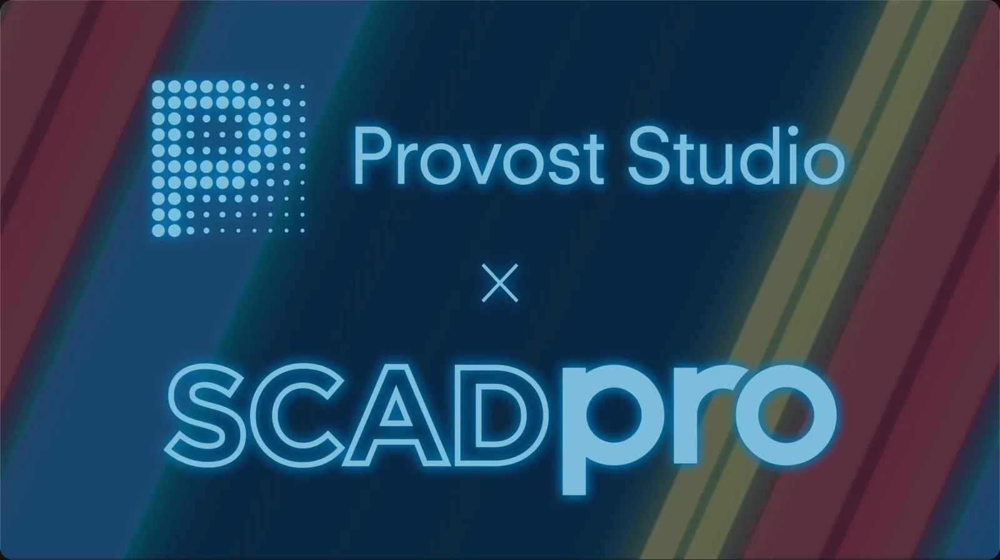
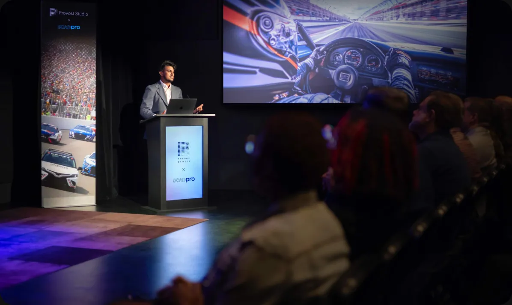
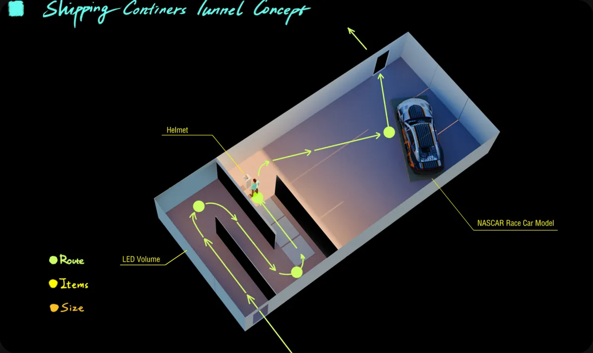
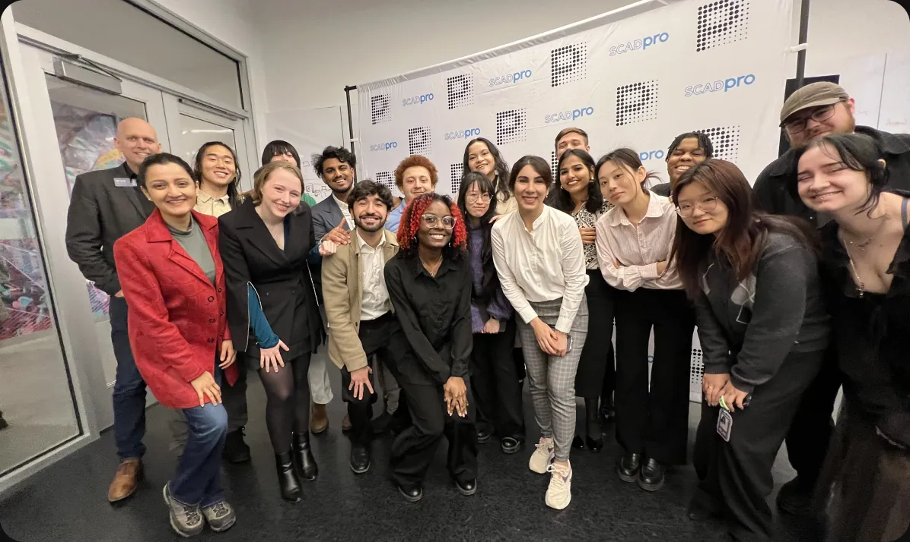

SCADPRO X PROVOST
Project Manager
- Software:
- Unreal Engine 5.3 - Miro - Jira - Figma
- Team Size:
- 20

In collaboration with PROVOST, I served as Co-Project Manager for a high-stakes integration of Mixed Reality (MR) and live studio Virtual Production. While initially exploring Finance and Medical verticals, we ultimately pivoted to the Racing vertical, utilizing an XR Stage to merge AR/VR elements into a high-octane cinematic experience.
Leadership & Technical Execution
Project Orchestration
Bridged the gap between technical production constraints and creative vision. I managed schedules and deliverables under intense production windows, ensuring that the hardware integration stayed aligned with our creative milestones.

XR Stage Integration
Explored the convergence of Unreal Engine, camera tracking systems, and real-time VFX. I played a key role in stabilizing the pipeline between the physical LED volume and digital assets to ensure a seamless "brain-to-stage" workflow.

Production Management
Maintained team morale and momentum through iterative "check-ins" and pivots. I learned to navigate the high-pressure environment of a live virtual production set, where technical adaptability is the difference between a successful take and a system failure.

Reflections Innovation Under Production Constraints
This collaboration was an exercise in high-stakes systems integration, pushing me to think beyond traditional pipelines. Working in a professional production environment required a shift in mindset: problem-solving had to be as technically precise as it was creatively ambitious.
A Note on Confidentiality While the specific deliverables of this project are protected under NDA, the foundational experience was invaluable. It solidified my understanding of how innovation thrives at the intersection of design and technology, and prepared me for the complexities of large-scale, collaborative industry productions.
Systems Convergence
I explored how disparate technologies, from real-time tracking to immersive display systems, could be synthesized into a single, cohesive user experience.
High-Level Collaboration
The project demanded cross-disciplinary communication. I learned to act as a "technical translator," ensuring that design intentions were feasible within the constraints of hardware.
Production Maturity
Operating within a professional studio environment sharpened my ability to deliver under pressure while maintaining the strict standards of a high-output workflow.